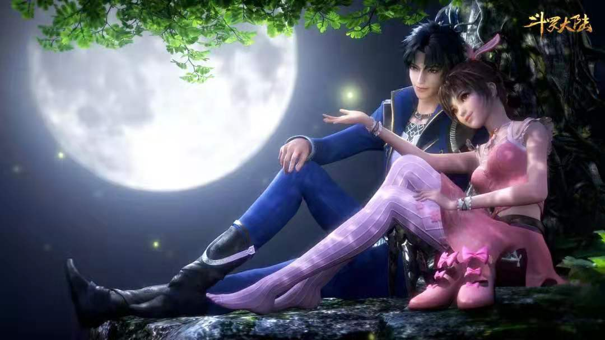

唐三
玄幻小说《斗罗大陆》男主角
唐三，前世为唐门外门弟子，因偷学内门《玄天宝录》里的武技，为唐门所不容，跳崖明志，却来到了另一个世界——斗罗大陆。
六岁时觉醒出两个武魂，百年来第三个双生武魂，武魂为蓝银皇和昊天锤。和十万年柔骨兔小舞拥有一段自六岁起的感情，后结为夫妻。
初代史莱克七怪之一，年龄排行第三，简称小三，外号千手修罗，斗罗封号「千手」，昊天斗罗唐昊和十万年蓝银皇阿银之子。
已成神，传承海神与修罗神双神位，在初代善良神王和邪恶神王离开神界后成为斗罗神界掌控者兼最强者，斗罗神界委员会五大神王之一。众神之战后与诸神王一同建立大神圈，持有三件超神器，为掌管大神圈的十二神王之首，大神圈至高神王。
角色形象
前世
原著描述中：他是来自唐家的外门弟子，天资聪颖，习得了唐门武学暗器之精髓。
所以在设计前世唐三时，着重在他的腰封、护腕袖箭等处添加了暗器装备，以精密的武器装备来展示角色的特别。色彩上，蓝色是最初就被确定的唐三代表色，会延续到后世的设计中。以少量的金色点缀在细节处，精致却不浮夸，暗合了前世唐三的个性。

今生
他有完整的铁匠的工作装备：厚重皮制的围裙，特殊加工过的护臂和手套，以及能够他来使用的小铁锤等等。而这些褪去之后，他还是一个和同龄人没有什么不同的6岁孩子。
角色能力
- 武魂
- 蓝银皇（第一武魂）：（原为蓝银草，在八万五千年蓝银王帮助之下觉醒，乃为植物系武魂之帝王。控制系最强器武魂）
- 昊天锤（第二武魂）：（天下第一宗门昊天宗的传承武魂，也是斗罗大陆顶级武魂中攻击超强的霸道武魂，乃一切强攻系武魂的克星，代表着最强横的力量与攻击，唐昊曾经在使用第七魂技器魂真身时用出昊天锤攻击，结果7个封号斗罗一起出手才挡住，可见其攻击之强。强攻系最强器武魂）
- 境界
突破百级阻碍，成为了传奇般的神祗
- 神位
- 海神：由蓝银皇继承，主神神位中最强的存在
- 修罗神：由昊天锤继承，作为执法神，有审判绝大部分神祇的能力
- 武魂魂技
- 魂骨魂技
- 领域魂技
- 玄天宝录总纲
- 永远不要让无法完全信任的人知道你真正的实力有多少。
- 何为暗器，暗中使用，克敌制胜的特殊武器方为暗器。如敌人已知你要使用它，那么，它就不在是暗器，而是明器。
- 确定对手是敌人，只要其有取死之道，就不要手下留情，否则只会给自己增添烦恼。
- 永远不要试图扮猪吃老虎，否则很容易真的变成猪
- 凡唐门弟子，不可轻易招惹是非，但如有主动侵犯者，许以雷霆还之
- 泰山崩于前而色不变，黄河决于顶而面不惊！真正的暗器大师在任何时候都有一颗冷静的头脑！
- 暗器

角色经历
前世经历
唐家三少小说《斗罗大陆》男主角，前世为巴蜀唐门外门子弟。只因偷学内门绝技而为唐门不容，二十九岁时完成梦想，造就唐门第一暗器佛怒唐莲后，被唐门众长老及门主围困于鬼见愁，留下三枚佛怒唐莲后跳崖明志，成为其来到斗罗大陆的契机。
异界大陆
觉醒双生武魂蓝银草（后进化为蓝银皇）与昊天锤（昊天宗直系武魂），先天满魂力，拜大师玉小刚为师，在诺丁学院遇到小舞。
六年后与小舞共同加入史莱克学院，结交了一群与自己患难一生的兄弟姐妹，组建了最强七人组合：史莱克七怪（之所以叫史莱克七怪，有两个原因，首先是因为他们都是出身于史莱克学院的怪物天才，其次是因为当时整个学院也就只有他们七个学员。后世奉初代史莱克七怪为史莱克七圣。


人际关系

小舞
唐三的妻子，《斗罗大陆》女主角，史莱克七怪排行老五，十万年柔骨兔，和唐三共享海神、修罗神神位，亦是修罗剑鞘。